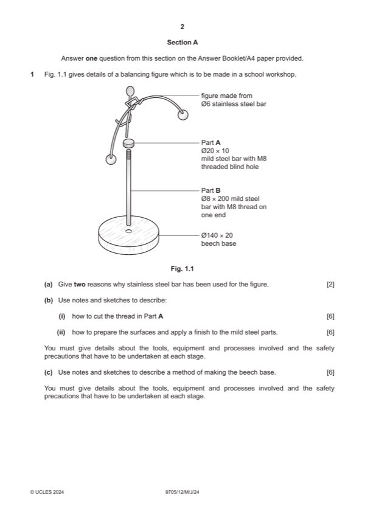

Question 1

Original paper page 2
Part 1(a) — solution
Exemplar answers: 2 AOVR
Does not require a finish [1] Rust resistant [1
Provides an attractive appearance [1] Hard/tough [1]
0–2 Can be easily bent to shape [1]
Mark points
- Include the ideas shown in the solution above.
Part 1(b)(i) — solution
Notes and/or sketches show: 6
Process of cutting the threads explained [0–3]
Tools and equipment for cutting the internal thread e.g. vice, drill,
tap, lubricant... [0–2]
Safety precaution when cutting threads e.g. wear eye protection,
work secured in a vice... [0–1]
0–6
Mark points
- Include the ideas shown in the solution above.
Part 1(b)(ii) — solution
Notes and/or sketches show: 6
Process of preparing and applying the finish explained [0–3]
Tools and equipment for preparing the surface e.g. wire brush,
emery cloth and adding a named finish e.g. paint, brush, thinners...
[0–2]
Safety precaution when preparing or applying a finish e.g. work in a
well-ventilated area, wear a face mask... [0–1]
0–6
Mark points
- Include the ideas shown in the solution above.
Part 1(c) — solution
Notes and/or sketches show: 6
Process of turning explained [0–3]
Tools and equipment for preparing and turning the beech base e.g.
tenon saw, faceplate, woodscrews, screwdriver and for turning the
base e.g. lathe, lathe tools, glasspaper... [0–2]
Safety precaution when turning wood e.g. make sure the work
spins freely before turning on the lathe, wear eye protection... [0–1]
0–6
University Press & Assessment 2024 Page 4 of 16
9705/12 Cambridge International AS & A Level – Mark Scheme May/June 2024
Guidance
Mark points
- Include the ideas shown in the solution above.